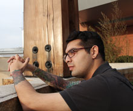

Mi nombre es Oscar Jetier Espinoza Paredes, soy estudiante de la carrera de Diseño Gráfico en Duoc UC, cursando actualmente segundo año.
Con respecto a mis fortalezas, cuento con habilidades propias de un diseñador: soy creativo e innovador, tengo facilidades para comunicar e interpretar conceptos de forma visual ya sean tendencias, emociones, mensajes,etc.
Por otra parte, a lo largo de la carrera he ido adquiriendo competencias y destrezas tanto disciplinares como de empleabilidad, que han ido complementando mis intereses y vocación. En primer lugar, en cuanto a lo disciplinar, he ido adquiriendo conocimientos de procesos de investigación y análisis mediante el desarrollo de diferentes proyectos de diseño, además de conocimientos de representación y manejo de técnicas manuales (ilustración, packaging, prensa editorial) y digitales (Fotografia, Suite Adobe ilustrator/Photoshop/in design/Diseño & Desarrollo Web), mediante diversas técnicas de representación. En segundo lugar, en cuanto a empleabilidad, he ido adquiriendo conocimientos de formación integral, trabajo colaborativo, gestión y planificación de proyectos, autogestión y emprendimiento, que me han permitido participar en proyectos reales y que me han permitido ganar experiencia en cuanto al mercado en el que me veré enfrentado.
De acuerdo a mis oportunidades, cuento con el respaldo de cursar una carrera en un Instituto destacado, con docentes con aptitudes y habilidades que permiten el desarrollo de los aprendizajes propios de un diseñador, y que actúan como el medio de contacto más próximo con la realidad de un diseñador.
Sin embargo poseo la convicción de luchar hasta conseguir lo que quiero, un profesional integral, apto para cualquier área en la que me quiera desarrollar, con virtudes propias de un diseñador profesional y con habilidades que me permitan demostrar aquello en lo que soy bueno.
ALGO SOBRE MI...
CONTACTO
- ENCUENTRAME EN SANTIAGO DE CHILE
- Email: oskar.ep@gmail.com
- Móvil: +56 9 68771256